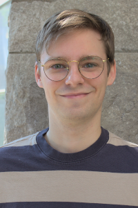
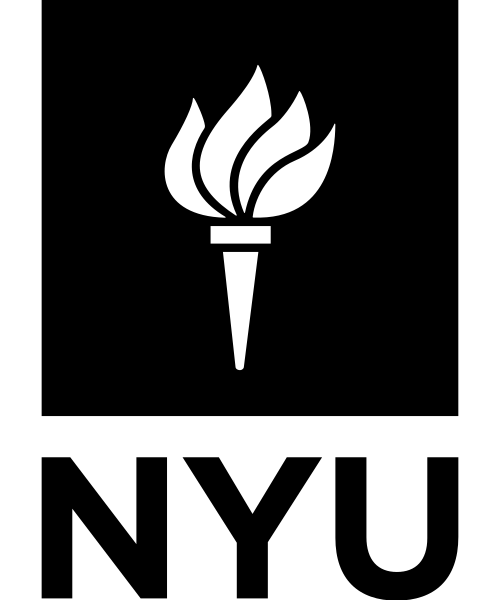

Renaud Raquépas
I am a Phillip Griffiths Research Assistant Professor in the Department of Mathematics at Duke University, hosted by Professor Jonathan C. Mattingly. Prior to this, I was a Courant Instructor in the Mathematics Department of the Courant Institute at New York University hosted by Professor Lai-Sang Young, and postdoctoral reasearcher in mathematics at CY Cergy Paris Université (Laboratoire AGM), working with Professor Armen Shirikyan.
I completed my PhD in late 2020 at Université Grenoble Alpes (Institut Fourier) and McGill University (Department of mathematics and statistics), under the joint supervision of Professors Alain Joye and Vojkan Jakšić. I did both my BSc and my MSc at McGill University, in Montréal, over a period of approximately 5 years. It is during that period that I started working with Vojkan Jakšić, but also with other visiting professors and postdocs at McGill University.
Contact
E-mail address: [firstname].[lastname]@duke.edu
Current position
Phillip Griffiths Research Assistant Professor, 2025–
Department of Mathematics
Duke University, Durham NC
Mentor: Jonathan C. Mattingly
Previous position

Courant Instructor, 2022–2025
Department of Mathematics of the Courant Institute
New York University, New York NY
Mentor: Professor Lai-Sang Young
 Postdoctoral Researcher, 2021–2022
Postdoctoral Researcher, 2021–2022
Mathematics (Laboratoire AGM)
CY Cergy Paris Université, Cergy-Pointoise
Mentor: Professor Armen Shirikyan
Education
 Doctor of Philsophy (PhD), 2017–2020
Doctor of Philsophy (PhD), 2017–2020
Mathematics
McGill University, Montréal QC and Université Grenoble Alpes, Grenoble
Advisors: Professors Vojkan Jakšić and Alain Joye
Thesis: Tools and results in the study of entropy production
 Master of Science (MSc), 2016–2017
Master of Science (MSc), 2016–2017
Mathematics and statistics
McGill University, Montréal QC
Advisor: Professor Vojkan Jakšić
Thesis: Heat full statistics and regularity of perturbations in quantum statistical mechanics
Miscellaneous facts
- The IPA phonetic transcription of my name would probably be [ʁəno ʁakepɑ].
- I was born in the 90's in the Province of Québec.
- My first language is French, but I am also fluent in English and I have teaching experience in both languages.
- As an undergraduate student, I was on the committee of the Seminars in Undergraduate Mathematics in Montréal and worked on the website of the French-language mathematics magazine Accromath.
- The font used on this website is 'Roboto'.